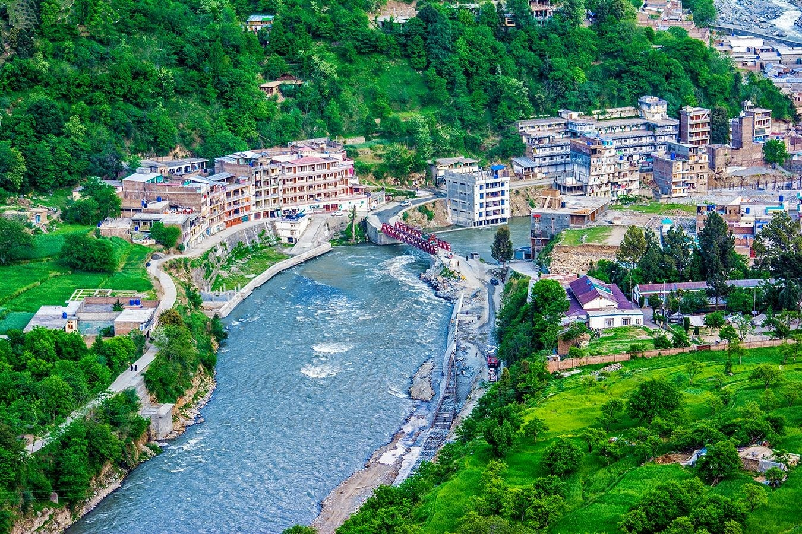
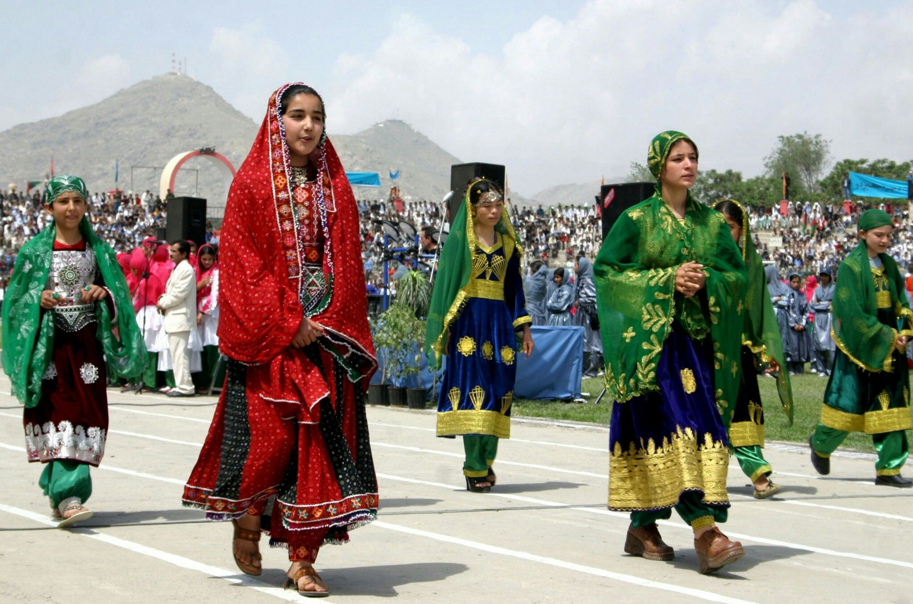
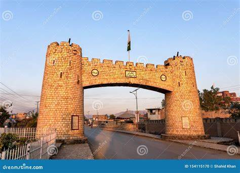
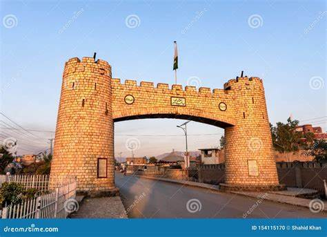
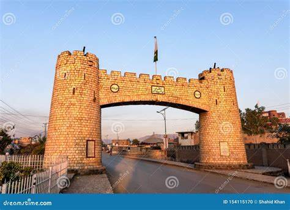

Khyber Pakhtunkhwa Province


 


Khyber Pakhtunkhwa, commonly abbreviated as KPK or KP and previously called NWFP (North Frontier Province) is one of Pakistan’s four provinces. It is situated in the country’s northwestern region, along with the Pak-Afghan border. Previously it was known as the NWFP (North-West Frontier Province) until 2010 when the eighteenth amendment to the Pakistani Constitution changed its name to KPK (Khyber Pakhtunkhwa) and it is also known commonly by a number of other names. It is Pakistan’s third-largest province with respect to economy and population while being the smallest of the 4-provinces geographically.